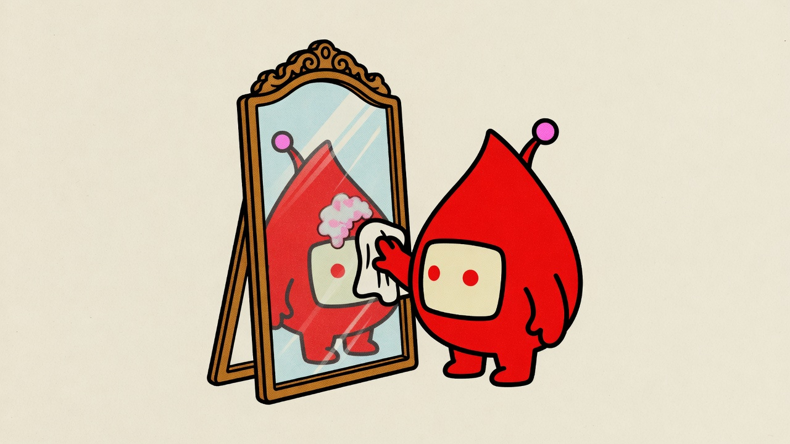
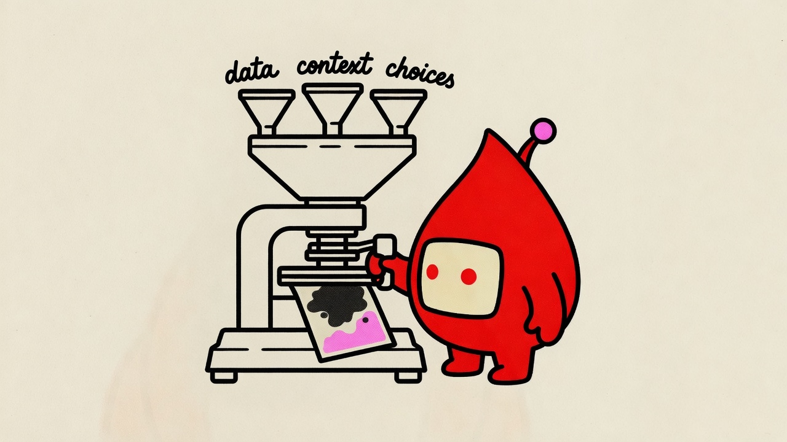
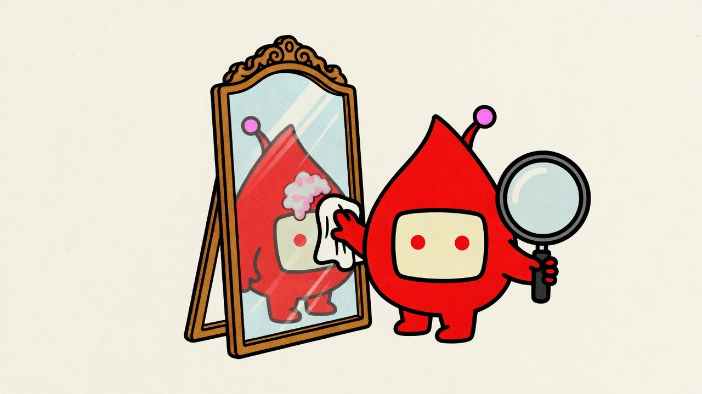
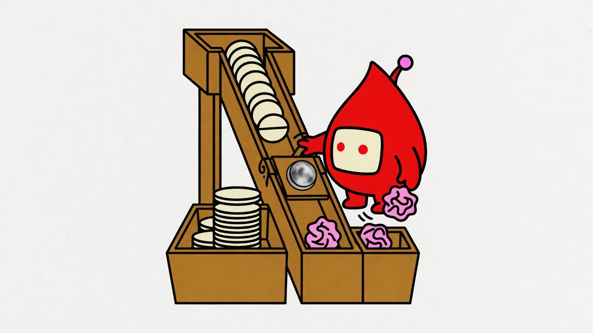
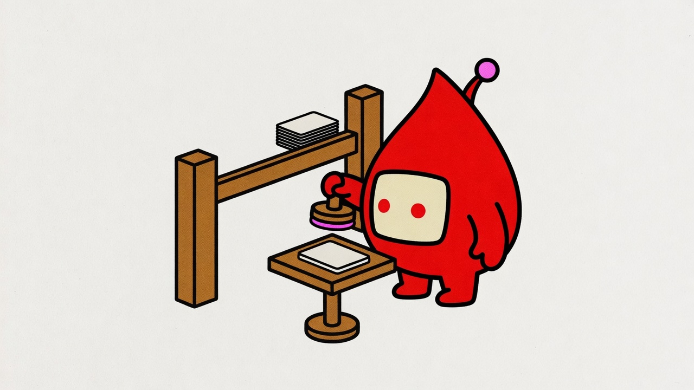

hero - smudged mirror v2
x-ai/grok-imagine-image-quality
A 16:9 horizontal editorial illustration that explains ONE idea: "AI doesn't invent bias out of nowhere — it reflects the distortions already baked into the data it was trained on, like a mirror with a smudge on the glass itself, not on the surface." Composition (a snag): Pulse stands in front of a tall, ornate standing mirror in a wooden frame, one stubby arm pressing a cleaning cloth flat against the glass mid-wipe. But the smudge is not on the surface — it is a small cloudy, warped patch baked into the glass itself, roughly where the head/screen area of the reflection would be, and it is the ONLY accent-colored thing in the mirror. The rest of the reflection — body, arms, legs, antenna — stays the exact same blood-red as Pulse's real body; it is NOT recolored, only that one patch is warped and accent-tinted, so the reflection reads as "mostly normal, one bad patch," never as a fully different-colored twin. Pulse's dot-eye is angled toward the glass, mid-effort, not yet aware the wiping isn't working. Generous negative space around the scene; the mirror and Pulse fill ~55-65% of the frame, slightly off-center. CHARACTER (locked, keep exactly on the reference model): the recurring mascot — a plump teardrop/blood-drop body (fat and rounded at the bottom, narrowing to a gentle pointed tip at the top) filled solid blood red, one rounded-rectangle screen face centered on the wide lower portion with a cream-white fill and two small dot eyes ONLY, one short antenna with an accent-colored ball tip, small stubby arms and legs in the same blood-red fill. The face is completely blank and deadpan: two small round dots for eyes and NOTHING else — absolutely no eyebrows, no eyebrow lines, no eyelids, no angry/worried/surprised expression, no mouth, ever, on Pulse or on its reflection. It MUST perform the move, not decorate. The mascot is a solid OPAQUE shape in front of the scene — no ground line, table edge, horizon, or prop passes through its body; background lines stop at its silhouette. Its limbs join the body cleanly at sensible points, exactly the count its design specifies (no extra, floating, or mid-body arms/legs). Only the mascot's own parts touch its outline: the cleaning cloth is HELD in one hand and clearly separated from the torso, never pressed flat against the body or sprouting from it. Hold at most one prop per hand; any extra object sits on the ground. LINE LANGUAGE: draw EVERYTHING — mascot, objects, mirror frame — in ONE bold, even-weight, softly-rounded outline (clean vinyl-sticker line), not thin scratchy sketch lines. STYLE: risograph print — grainy halftone texture, slight ink-layer offset, faint paper grain, flat fills, no gradients, no soft shadows. PALETTE: paper #fffef7. Structure ink #111111 for all linework, forms, and label text. Accent #ff3d9a used sparingly — the character's antenna ball + the warped patch in the mirror glass only. LABELS: no text labels in this image. No title bar, no type label, no logo. Aspect ratio: 16:9. Aspect ratio: 16:9.

01 - three sources of bias v2
x-ai/grok-imagine-image-quality
A 16:9 horizontal editorial illustration that explains ONE idea: "bias doesn't come from one bad actor — it seeps in from three places at once: the training data, missing context, and the design choices made along the way." Composition (a contraption): a squat, hand-built stamping press sits center-frame, fed from above by three short funnel-spouts merging into one hopper. Pulse stands beside the press, one stubby arm cranking the press lever down hard, the other braced on the housing. A single rectangular card is mid-stamp, printed crooked and stained unevenly dark across one corner. Each funnel has one short hand-lettered label directly on the bare paper beside it: "data" on the left funnel, "context" on the middle funnel, "choices" on the right funnel. Pulse's dot eyes face forward toward the card. Generous negative space around; the press and Pulse fill ~55-65% of the frame, slightly off-center. CHARACTER (locked, keep exactly on the reference model): the recurring mascot — a plump teardrop/blood-drop body (fat and rounded at the bottom, narrowing to a gentle pointed tip at the top) filled solid blood red, one rounded-rectangle screen face centered on the wide lower portion with a cream-white fill and two small dot eyes ONLY, one short antenna with an accent-colored ball tip, small stubby arms and legs in the same blood-red fill. The face is completely blank and deadpan: the eyes are two small PERFECTLY CIRCULAR dots, same size, sitting flat and level on the screen — never slanted, never narrowed to slits, never drawn as crescents or half-closed lids, never angled to suggest an expression. Absolutely no eyebrows, no eyebrow lines, no eyelids, no mouth, ever. It MUST perform the move, not decorate. The mascot is a solid OPAQUE shape in front of the scene — no ground line, table edge, horizon, or prop passes through its body; background lines stop at its silhouette. Its limbs join the body cleanly at sensible points, exactly the count its design specifies (no extra, floating, or mid-body arms/legs). The press lever is HELD in one hand and clearly separated from the torso, never pressed flat against the body or sprouting from it. Hold at most one prop per hand; any extra object sits on the ground or on the press housing. LINE LANGUAGE: draw EVERYTHING — mascot, objects, funnels, press — in ONE bold, even-weight, softly-rounded outline (clean vinyl-sticker line), not thin scratchy sketch lines. STYLE: risograph print — grainy halftone texture, slight ink-layer offset, faint paper grain, flat fills, no gradients, no soft shadows. PALETTE: paper #fffef7. Structure ink #111111 for all linework, forms, and label text. Accent #ff3d9a used sparingly — the character's antenna ball + the crooked/dark corner of the stamped card only. LABELS: exactly 3 short hand-lettered English labels — "data", "context", "choices" — in the structure-ink color placed directly on the bare paper beside each funnel. Never put label text on a colored fill. No title bar, no type label, no logo. Aspect ratio: 16:9. Aspect ratio: 16:9.

04 - ongoing care v2
x-ai/grok-imagine-image-quality
A 16:9 horizontal editorial illustration that explains ONE idea: "fairness isn't a fix-once thing — it's ongoing, deliberate attention, the same care an organization already brings to the people it serves." Composition (a change, echoing the mirror from the hero image): the same tall, ornate standing mirror from before, but now Pulse stands beside it at arm's length, holding a large round magnifying glass out to one side over the small cloudy accent-colored patch (the glass positioned so it does NOT cover or overlap Pulse's own face), the other arm holding a soft cloth mid-dab directly against just that patch, working it carefully rather than wiping the whole surface. The patch is slightly smaller and fainter than before, but still visibly there — the work is ongoing, not finished. Pulse's face stays fully visible and unobstructed, dot eyes facing forward toward the patch. Generous negative space around; the mirror and Pulse fill ~55-65% of the frame, slightly off-center. CHARACTER (locked, keep exactly on the reference model): the recurring mascot — a plump teardrop/blood-drop body (fat and rounded at the bottom, narrowing to a gentle pointed tip at the top) filled solid blood red, one rounded-rectangle screen face centered on the wide lower portion with a cream-white fill and two small dot eyes ONLY, one short antenna with an accent-colored ball tip, small stubby arms and legs in the same blood-red fill. The face is completely blank and deadpan: the eyes are two small PERFECTLY CIRCULAR dots, same size, sitting flat and level on the screen — never slanted, never narrowed to slits, never drawn as crescents or half-closed lids, never angled to suggest an expression. Absolutely no eyebrows, no eyebrow lines, no eyelids, no mouth, ever. It MUST perform the move, not decorate. The mascot is a solid OPAQUE shape in front of the scene — no ground line, table edge, horizon, or prop passes through its body; background lines stop at its silhouette. Its limbs join the body cleanly at sensible points, exactly the count its design specifies (no extra, floating, or mid-body arms/legs). The magnifying glass is HELD in one hand and the cloth in the other, each clearly separated from the torso, never pressed flat against the body or sprouting from it. Hold at most one prop per hand; any extra object sits on the ground. LINE LANGUAGE: draw EVERYTHING — mascot, objects, mirror frame — in ONE bold, even-weight, softly-rounded outline (clean vinyl-sticker line), not thin scratchy sketch lines. STYLE: risograph print — grainy halftone texture, slight ink-layer offset, faint paper grain, flat fills, no gradients, no soft shadows. PALETTE: paper #fffef7. Structure ink #111111 for all linework, forms, and label text. Accent #ff3d9a used sparingly — the character's antenna ball + the faint patch on the glass only. LABELS: no text labels in this image. No title bar, no type label, no logo. Aspect ratio: 16:9. Aspect ratio: 16:9.

02 - uneven sort v3
x-ai/grok-imagine-image-quality
A 16:9 horizontal editorial illustration that explains ONE idea: "identical inputs, run through a biased system, come out sorted unfairly — some people get the good outcome, others don't, for no good reason." Composition (a contraption): a tall wooden sorting chute stands center-frame, funneling down from a hopper at top where several identical round discs are queued, waiting to drop one at a time. Partway down, the chute forks in two: a smudged, cloudy round lens sits right at the fork, "reading" each disc as it passes. Below the fork, a hinged flap gate splits the path — Pulse stands beside the chute gripping the flap's control lever with one stubby arm, mid-pull, actively operating it, the other arm braced on the chute's frame. On the LEFT, a wide bin already holds four discs, all smooth and round, stacked neatly. On the RIGHT, a narrower bin holds one single disc, crumpled and bent out of shape — and a second identical disc is caught mid-air, just leaving the flap, already starting to crumple as it heads toward the same bin, even though it looked exactly like the others going in. Pulse's dot eyes face forward toward the crumpling disc mid-air, mid-pull on the lever. Generous negative space around; the chute and Pulse fill ~55-65% of the frame, slightly off-center. CHARACTER (locked, keep exactly on the reference model): the recurring mascot — a plump teardrop/blood-drop body (fat and rounded at the bottom, narrowing to a gentle pointed tip at the top) filled solid blood red, one rounded-rectangle screen face centered on the wide lower portion with a cream-white fill and two small dot eyes ONLY, one short antenna with an accent-colored ball tip, small stubby arms and legs in the same blood-red fill. The face is completely blank and deadpan: the eyes are two small PERFECTLY CIRCULAR dots, same size, sitting flat and level on the screen — never slanted, never narrowed to slits, never drawn as crescents or half-closed lids, never angled to suggest an expression. Absolutely no eyebrows, no eyebrow lines, no eyelids, no mouth, ever. It MUST perform the move, not decorate. The mascot is a solid OPAQUE shape in front of the scene — no ground line, table edge, horizon, or prop passes through its body; background lines stop at its silhouette. Its limbs join the body cleanly at sensible points, exactly the count its design specifies (no extra, floating, or mid-body arms/legs). The lever is HELD in one hand and clearly separated from the torso, never pressed flat against the body or sprouting from it. Hold at most one prop per hand; any extra object sits on the chute or ground. LINE LANGUAGE: draw EVERYTHING — mascot, objects, chute, bins — in ONE bold, even-weight, softly-rounded outline (clean vinyl-sticker line), not thin scratchy sketch lines. STYLE: risograph print — grainy halftone texture, slight ink-layer offset, faint paper grain, flat fills, no gradients, no soft shadows. PALETTE: paper #fffef7. Structure ink #111111 for all linework, forms, and label text. Accent #ff3d9a used sparingly — the character's antenna ball + the crumpled/crumpling discs only. LABELS: no text labels in this image. No title bar, no type label, no logo. Aspect ratio: 16:9. Aspect ratio: 16:9.

03 - checkpoint v2
x-ai/grok-imagine-image-quality
A 16:9 horizontal editorial illustration that explains ONE idea: "before an AI-driven decision goes out the door, a human has to check it." Composition (a crossing): a simple waist-high wooden checkpoint post stands center-frame with one horizontal swing-arm barrier lowered flat and shut, blocking a narrow path. Pulse stands planted beside the post, one stubby arm reaching up and gripping the barrier arm to hold it firmly down and closed. In front of Pulse, at the same height as its hand, a small waist-high pedestal table holds ONE single card, paused flat on its surface right at the checkpoint, not moving. Pulse's other arm holds a large round rubber stamp raised directly above that card, mid-pause, about to press down. On the far side of the barrier, two or three cards already sit in a small neat stack, clearly having passed the checkpoint earlier. Pulse's dot eyes face forward, angled down toward the single card on the pedestal. The whole scene — post, barrier, pedestal, Pulse, both card stacks — is fully visible with clear space around every element, nothing cropped or cut off at the frame edge. Generous negative space around; the checkpoint and Pulse fill ~55-65% of the frame, slightly off-center. CHARACTER (locked, keep exactly on the reference model): the recurring mascot — a plump teardrop/blood-drop body (fat and rounded at the bottom, narrowing to a gentle pointed tip at the top) filled solid blood red, one rounded-rectangle screen face centered on the wide lower portion with a cream-white fill and two small dot eyes ONLY, one short antenna with an accent-colored ball tip, small stubby arms and legs in the same blood-red fill. The face is completely blank and deadpan: the eyes are two small PERFECTLY CIRCULAR dots, same size, sitting flat and level on the screen — never slanted, never narrowed to slits, never drawn as crescents or half-closed lids, never angled to suggest an expression. Absolutely no eyebrows, no eyebrow lines, no eyelids, no mouth, ever. It MUST perform the move, not decorate. The mascot is a solid OPAQUE shape in front of the scene — no ground line, table edge, horizon, or prop passes through its body; background lines stop at its silhouette. Its limbs join the body cleanly at sensible points, exactly the count its design specifies (no extra, floating, or mid-body arms/legs). The stamp is HELD in one hand, clearly separated from the torso; the barrier arm is gripped by the other hand, resting against but not fused to the body. Hold at most one prop per hand; any extra object sits on the ground or pedestal. LINE LANGUAGE: draw EVERYTHING — mascot, objects, post, barrier, pedestal — in ONE bold, even-weight, softly-rounded outline (clean vinyl-sticker line), not thin scratchy sketch lines. STYLE: risograph print — grainy halftone texture, slight ink-layer offset, faint paper grain, flat fills, no gradients, no soft shadows. PALETTE: paper #fffef7. Structure ink #111111 for all linework, forms, and label text. Accent #ff3d9a used sparingly — the character's antenna ball + the stamp's ink pad only. LABELS: no text labels in this image. No title bar, no type label, no logo. Aspect ratio: 16:9. Aspect ratio: 16:9.